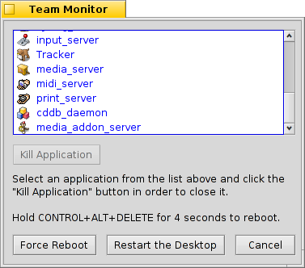

本节的翻译还未完成。在未完成之前，所有的未完成部分都将使用英语原文。
程序监控器
使用 CTRL ALT DEL 启动程序监控器，将会显示所有正在运行的程序。
由系统启动的程序显示为蓝色，而由用户启动的程序则显示为黑色。
未响应的程序将会显示为红色，这也意味着该程序已经崩溃。您可以选中它，然后按下 键(或者 DEL 或 Q)，强制退出该程序。如果上述操作不起作用，您可以尝试 （或者 SHIFT DEL K）。
You can summon a Terminal with (or OPT ALT T).
Finally, if all hope is lost, you can (or hold CTRL ALT DEL for 4 seconds).